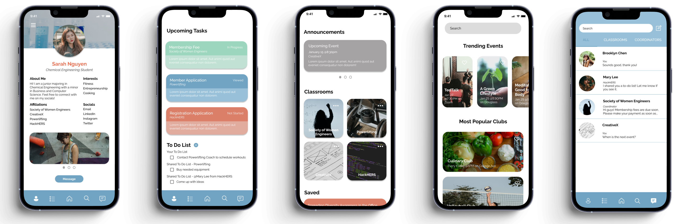

Overview
About the Project
The AfterSchool app was developed during the 2022 Rielly Douglass BOLD Externship with Microsoft. The challenge was to create a product that would encourage, inspire, and empower students to connect with each other during the global pandemic. The goal was to simplify the process of discovering and joining student organizations while improving communication and task management for both students and organization coordinators.
ROLE
UI/UX Designer, Product Manager
TIMELINE
January 4 - 14, 2022 (2 weeks)
TOOLS
Figma and Procreate
TEAM
Myself
The Challenge
The pandemic forced many student organizations to move online, resulting in disjointed communication and a lack of engagement. Students struggled to discover extracurricular activities and manage their responsibilities across multiple platforms. Organization leaders, in turn, found it difficult to keep members informed and organized due to inconsistent communication tools.
The Solution
The AfterSchool app is a centralized platform designed to streamline student communication, event discovery, and task management, making it easier for students and organization coordinators to connect and stay organized.
Understanding the User
The first step was to understand the key pain points experienced by both students and organization leaders. I conducted a survey and interviewed 10 college students to uncover common issues with communication and organization during the COVID-19 pandemic.
Key Insights
- 100% of participants used social media platforms like GroupMe and Instagram to stay connected with student organizations, while 50% relied solely on email.
- 90% learned about clubs and events through word-of-mouth, highlighting the need for better promotion tools.
- Participants frequently cited poor communication from organization leaders, lack of event promotion, and difficulty managing tasks across different platforms as their biggest pain points.
This research formed the foundation for the app's feature set, guiding the design process with a clear focus on solving these problems.
Ideation
With user insights in mind, I brainstormed features that would address the core challenges of communication, event discovery, and task management. My primary goals were to:
- Create a Dashboard to provide students with an overview of their organizations, tasks, and upcoming events.
- Develop an Explore Tab for students to easily find and join organizations based on their interests.
- Design a Task Management System to help both students and organization leaders keep track of responsibilities in a clear, organized manner.
I also defined user personas to ensure the app catered to different user needs:
- Jasmine, 18, a Rutgers freshman on the pre-med track, who struggles with the virtual transition and wants to meet new people.
- Eric, 21, a senior in Computer Science and a club coordinator who seeks a streamlined way to coordinate meetings and share information with members.
- Jessica, 20, a junior who started college during the pandemic and finds it difficult to discover clubs and events.
These personas helped guide the flow of the app and prioritize features based on user needs.
Wireframing
With the core features outlined, I began wireframing to visualize the app's layout and navigation. The goal at this stage was to create a simple, intuitive flow that minimized confusion and made it easy for students to accomplish tasks.
Low-fidelity Wireframes
The initial wireframes were kept minimal, focusing on the overall layout, navigation structure, and placement of key elements like buttons, cards, and menus. These wireframes included:
- Dashboard: A hub where students could see their upcoming events, tasks, and important updates from organizations.
- Explore Tab: A scrollable list of organizations, categorized by interest with a search bar for easy filtering.
- Tasks Page: A simple to-do list where tasks could be sorted by organization, due date, or completion status.
Mid-fidelity Wireframes
Based on initial feedback, I refined the wireframes by adding more details and refining the layout:
- Adjusted the navigation bar to make it more accessible on mobile devices.
- Streamlined the Explore Tab by introducing filters for events and organizations, allowing users to search by keywords, date, or category.
- Improved the Tasks Page by adding color-coded tags (e.g., "In Progress" or "Completed") to help users prioritize their work.
Usability testing at this stage helped identify small improvements, such as reordering sections in the Dashboard to prioritize urgent tasks and events.
High-fidelity Deisgn
Once the wireframes were validated, I moved to high-fidelity design, where the focus was on creating a visually cohesive, polished interface.
Final Design
Brand Identity
- Color Scheme: A combination of soft blues and oranges was chosen to evoke a sense of approachability and community, reflecting the app’s goal of bringing students together.
- Typography: A clean, modern sans-serif typeface ensured readability across various screen sizes while maintaining a professional look.
- Logo: The logo featured rounded, friendly shapes to symbolize connection and collaboration, reinforcing the app's core mission.
High-Fidelity Prototypes
- Dashboard: I designed a visually clean interface with a clear hierarchy. Task notifications were highlighted, with upcoming events and saved opportunities also displayed. Micro-interactions, such as subtle animations on task completion, added a layer of user engagement.
- Explore Tab: Organization cards were designed with vibrant imagery and minimal text, allowing users to quickly identify clubs of interest. Filters were refined for easier navigation.
- Tasks Page: Each task was displayed with tags and progress bars, giving users a clear sense of their responsibilities. Organization leaders had a separate view to assign tasks to members, simplifying their workflow.
Interactive transitions and micro-animations were added to create a smooth, engaging experience. For example, students could swipe to mark tasks as complete, with satisfying visual feedback.
Challenges & Solutions
Throughout the design and development process of the AfterSchool app, several challenges arose, requiring thoughtful solutions to ensure the final product met user needs effectively.
Challenge 1: Fragmented Communication and Task Management
The first challenge was addressing the fragmented communication and task management that students faced across various platforms like email, GroupMe, and Slack. This disjointed system led to missed information and confusion. To solve this, the AfterSchool app centralized all communication and task management into one platform. By offering a unified task list, event calendar, and direct messaging system, the app allowed students to stay organized and informed, significantly reducing the risk of missing important updates.
Challenge 2: Creating an Intuitive Experience for Multiple User Types
The second challenge involved creating an intuitive user experience for both students and organization coordinators, who had different needs. Students required easy access to event discovery and task management, while coordinators needed tools to assign tasks and plan events efficiently. The solution was to design separate, interconnected dashboards for each user group, ensuring that both students and coordinators could navigate the app seamlessly, with tailored features that met their distinct workflows without overcomplicating the interface.
Challenge 3: Reducing Cognitive Overload
The third challenge was reducing cognitive overload for students, who often felt overwhelmed by the volume of tasks and events they needed to manage. To address this, the app employed a minimalist design with features like color-coded task statuses, progress tracking, and reminders. These design elements helped students prioritize their responsibilities and view important information at a glance, ultimately decreasing the mental strain and making the app easier to use without adding complexity.
Challenge 4: Encouraging Engagement in a Virtual Environment
The fourth challenge was encouraging student engagement in a virtual environment, where students often felt disconnected from extracurricular activities without the in-person interactions they were accustomed to. To tackle this, the AfterSchool app introduced social features such as group messaging, event invitations, and direct communication with club coordinators, fostering a sense of community. Additionally, the “saved opportunities” function allowed students to bookmark events and organizations of interest, while notifications kept them informed and engaged with upcoming tasks and activities.
Challenge 5: Ensuring Scalability and Flexibility
The fifth challenge was ensuring that the app could scale and remain flexible enough to accommodate a wide variety of student organizations, each with its own needs and structures. The solution was to design the app with modular components that allowed for customization. Organizations could tailor their profiles, events, and task lists according to their unique requirements. At the same time, the explore feature allowed students to filter and discover organizations based on their interests, ensuring that the app was adaptable to a diverse range of users without becoming overly complex.
Results
The project resulted in a fully functioning high-fidelity prototype for AfterSchool, with positive outcomes validated through usability testing and feedback.
Outcomes
The AfterSchool app successfully met user needs through a clean, user-centered design that improved task management, event discovery, and communication for students and organization leaders. Early usability tests showed increased productivity and engagement as students could better organize their extracurricular activities in one central app. The app’s intuitive interface for task assignment and event creation also streamlined workflows for leaders. The prototype's success generated interest from university stakeholders, leading to plans for further development and potential funding to move toward an MVP phase.
Key Takeaways
- User Research Drives Success: Conducting in-depth interviews and focus groups early in the process ensured that the final design aligned with user needs, reducing the need for significant rework.
- Iterative Design is Crucial: The project benefited immensely from multiple rounds of wireframing and prototyping. Testing both low- and high-fidelity wireframes allowed me to catch usability issues early, leading to a smoother final design process.
- Balancing Features is Key: Avoiding feature bloat by prioritizing core functionality kept the app simple yet effective. It’s important to resist the temptation to over-complicate the user experience, even if additional features may seem beneficial.
Conclusion
AfterSchool provided a comprehensive solution to the challenges faced by students managing their extracurricular activities.
By focusing on user-centered design principles, I was able to create an intuitive, functional app that simplified communication, task management,
and event discovery for both students and organization leaders. The iterative design process, informed by user feedback, led to a polished,
high-fidelity prototype that is ready for potential development.
This project was an invaluable learning experience, demonstrating the importance of thorough research, collaborative feedback, and
iterative design in creating digital products that make a meaningful impact on users' lives. Looking forward, I am excited to see how the
app evolves into a functional product that empowers students to stay organized, engaged, and connected within their academic communities.